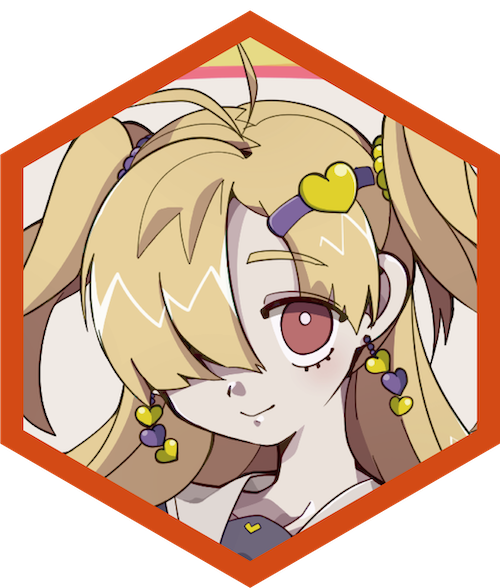
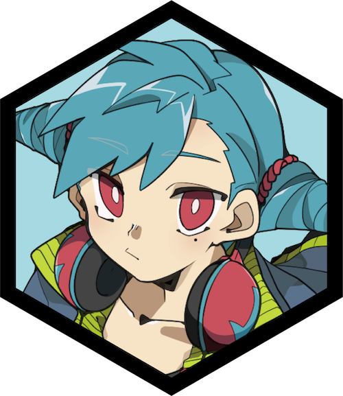

ヒロナ
水属性ガンナー｜17歳｜武器：アクアキャノン
街を守る警備組織 [カラクリナイツ] の一員.
興味のあること以外は無関心だが、
頼まれた仕事はしっかりやっているようだ.
音楽好きでいつもヘッドフォンを持ち歩いている.
「…音楽を楽しく聴くには、街が平和じゃないとね」


さまざまな派閥が争うカラクリアリーナで、
No.1を目指せ！
科学と機械の発展によって生み出されたエンタメ武器 [カラクリ] が流行り始めて早数年...
ポップでちょっぴりクレイジーな街 [グルービータウン] には、
様々な派閥が争いカラクリ使いNo.1を決めるアリーナがあった！
個人、タッグ、ギルド...あらゆる方法で頂点を目指せ！

Question?
Q.カラクリウォーズって実際に配信されているんですか？
カラクリウォーズは実際に配信されていません.
このサイトは大学の演習で "ゲーム公式サイト風" に作られたものです.